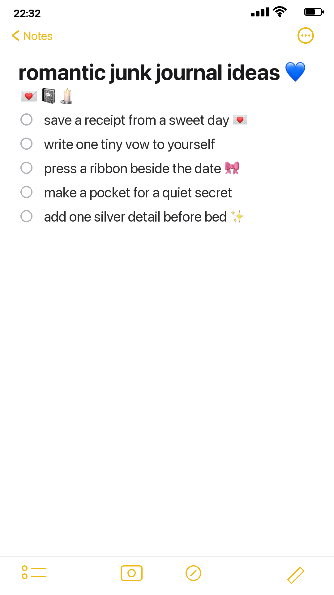
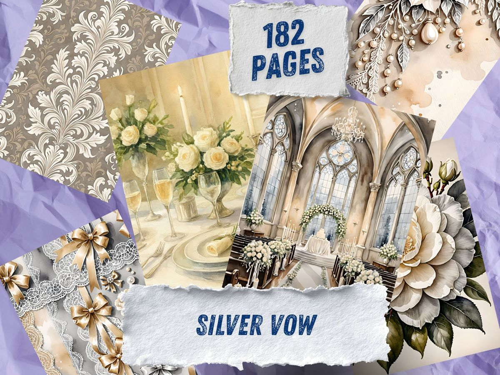
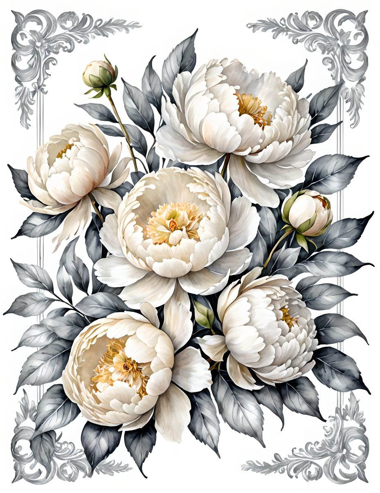
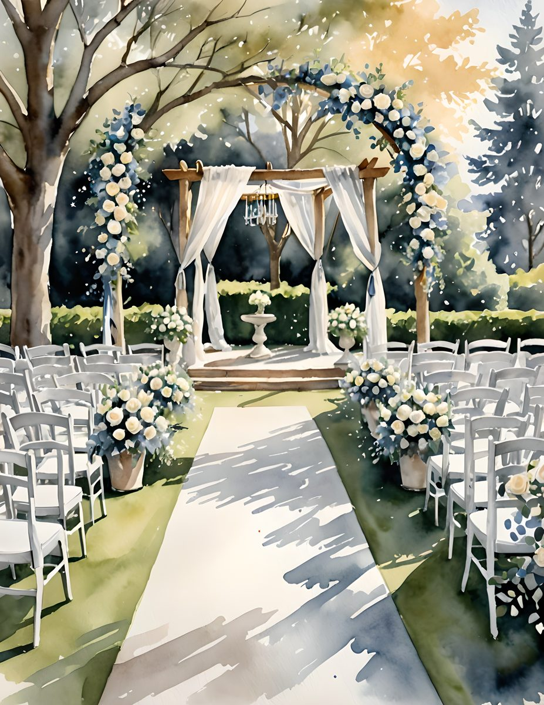
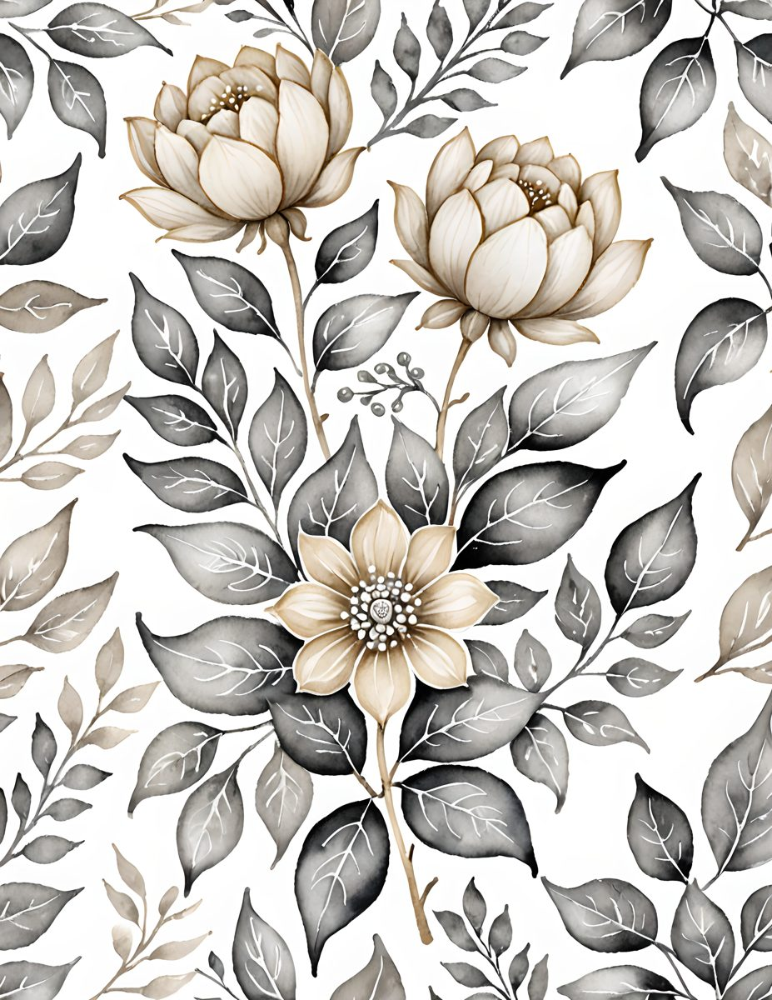

Some nights do not want a big project. They want a cup of tea, a small lamp, and a journal page that feels like it was made slowly. If your table is covered in pretty paper but your mind has gone blank, start with one tiny romantic detail instead of trying to design the whole spread.
This is the kind of page that does not need a perfect plan. It only needs a feeling: silver light, old letters, a ribbon end, the soft edge of lace, a receipt from a day you still want to remember. Romantic journaling works best when it feels collected rather than arranged.

Begin with the smallest keepsake
Choose one thing that already has a little emotional charge. A receipt from coffee, a dried petal, a ticket stub, a torn envelope, a strip of wrapping paper, or a note you wrote and never sent. The object does not have to be beautiful on its own. It only has to make you pause for half a second.
Glue it down first. Let the rest of the page respond to it. If the receipt is pale, add a darker scrap behind it. If the envelope is plain, tuck lace under one corner. If the petal is fragile, give it breathing room and let it become the quiet center.
Make the page feel like a private note
The easiest way to make a romantic spread feel alive is to write something small and specific. Not a grand caption. Not a perfect quote. Just a sentence that sounds like you.
Try one of these:
- I want to remember the way this evening felt.
- This is the color of a promise I made quietly.
- Save this for the version of me who forgets how soft life can be.
- A tiny vow: make ordinary days worth keeping.
Handwriting is allowed to wobble. In fact, it helps. A page with one slightly crooked line often feels more human than a perfect printed label.

Use a restrained palette
Romantic does not always mean pink. A page can feel tender in cream, grey, silver, graphite, old green, and candle-shadow brown. Pick two pale shades and one anchor shade. Then repeat them in three places: one paper layer, one small embellishment, one line of writing.
If the page starts feeling too sweet, add contrast. A charcoal ink line, a torn dark scrap, or a postage mark can keep lace and flowers from becoming too polished. The goal is not bridal perfection. The goal is a page that feels found, folded, and kept.
Layer like you are hiding a secret
A romantic junk journal page becomes more interesting when something is partly hidden. Slip a tag under a photograph. Let a torn edge cover half a word. Fold a note so only the first line shows. Put a tiny paper heart inside a pocket and let the pocket be the visible part.
That little bit of concealment gives the page a reason to be opened again. Pinterest may love the first glance, but journals are made for second looks.

If you want a ready-made romantic palette
For this test page I used the mood of Silver Vow: cream flowers, silvered leaves, lace, pearls, old-paper neutrals, and a little charcoal for depth. It is a soft commercial-use watercolor image pack for journal pages, cards, keepsake projects, and quiet romantic designs.




And if you make a page from this idea, leave one edge unfinished. A loose ribbon, an unglued corner, a blank line at the bottom. Romantic pages should feel like they are still breathing.
For more slow paper ideas, wander through the Sentimentalica journal.